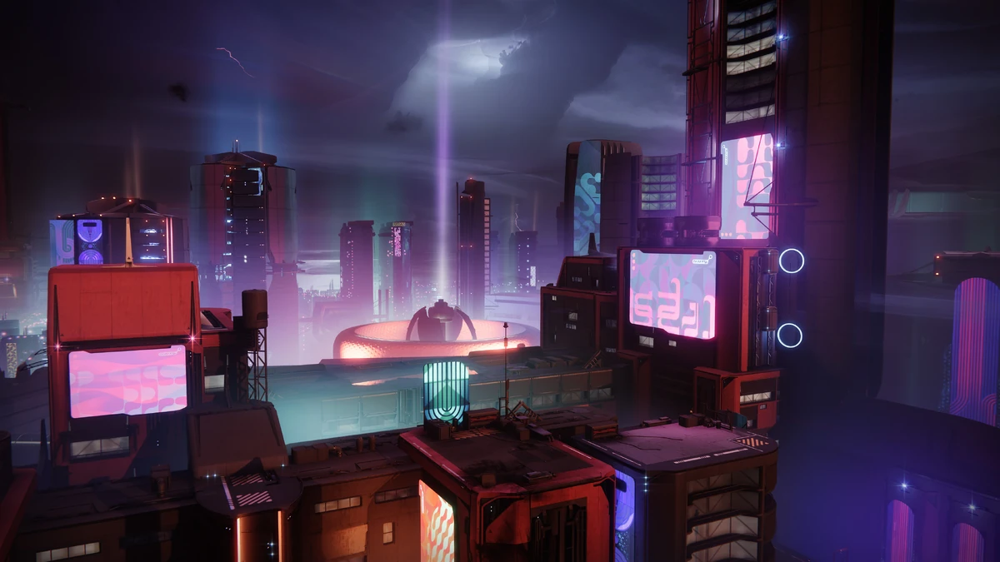
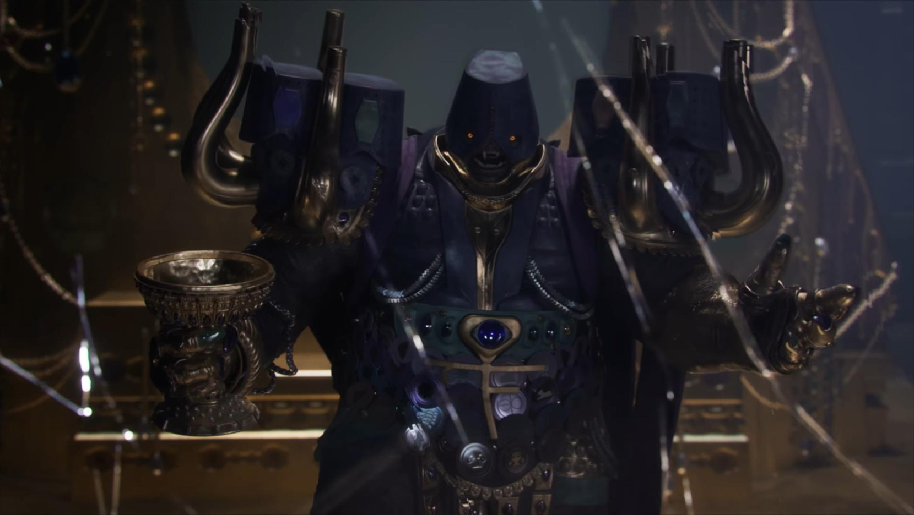

Po neúspěšné misi zachytit Savathûn se náš Strážce vrací zpět do města. Na cestě zpět na Zemi nás ale přeruší naléhavý hovor; je to Osiris, tentokrát opravdu. Dostáváme instrukce se vypravit na okraj Sluneční soustavy, konkrétně na Neptun. Nová Cabal armáda tu mobilizuje, a Osiris si žádá naši pomoc. Brzy dorazíme na Neptunovu oběžnou dráhu, kde se s Osirisem setkáváme, a brzy vidíme i flotilu Cabal lodí, o kterých se Osiris zmínil. Vysvětluje nám, že Cabal na palubách těchto lodí nemají tradiční rudou výzbroj - nejsou z Ghaulova Rudého Legionu. Tito Cabal patří pod jiného vůdce - císař Calus. Calus byl původní vůdce všech sjednocených frakcí Cabal. Jedné noci byl Calus svržen z trůnu v události známé jako Midnight Coup skupinou vysoce postavených Cabal jako například Ghaul, či Caiatl, Calusova vlastní dcera. S Osirisem jsme infiltrovali jednu Cabal loď, která vystřelovala sestupové moduly na povrch Neptunu. Do modulů nasedneme, a brzy se objevíme na futuristickém povrchu Neptunu. Doposud jsme neměli žádná data o civilizaci na Neptunovu povrchu, a to, že civilizace na planetě existuje, nám bylo brzy potvrzeno. Brzy jsme potkali dvě postavy; vysocí, schopní krátkého letu. Představili se jako Rohan a Nimbus a říkají si Cloud Strideři, ochránci města zvané Neomuna. V samotném městě jsme se o nich dozvěděli, že kvůli mechanickým vylepšením žijí pouze jednu dekádu než jejich systémy selžou. Neomuna se také zdá velmi prázdným městem; Živé vědomí všech obyvatel je uloženo v digitální databázi CloudArk. Rohan, Nimbusův mentor, vysvětluje důvod, proč jsou Cloud Strideři mimo CloudArk. Existují z důvodu fyzické ochrany města, hlavně parakauzálního artefaktu známý jako The Veil. Nimbus ani Rohan o entitě moc nevědí, avšak Osiris a náš Strážce si jsou moc dobře vědomi, pro co tato entita slouží. Veil je parakauzální symbol Temnoty, stejně jako Traveler je symbol Světla. Fúze těchto dvou těles by způsobila přesně to, po čem Witness, nepřítel lidstva touží: Věčné limbo, nekonečná nicota. To je i důvod, proč je Calusův Shadow Legion na Neptunu. Calus se po svém exilu totiž stal učencem onoho nepřítele Světla.


Krátce po našem příletu na Neptun si Osiris začne všímat zvláštní zelené energie všude ve městě. Nimbus ani Rohan nemají tušení, co kapsy energie ve vzduchu jsou, ale vyzařují velké množství parakauzální energie. Náš Strážce se brzy naučil energii využít, tentokrát tkaním vláken zdálnivě mimo realitu, a použít je v boji. Osiris nám ve využití síly pomohl, a náhle ji pojmenoval Strand. S další sílou Temnoty v našich rukách, prořezávat se Calusovým Legionem bylo čím dal jednodušší. Jednoho dne jsme se dozvěděli o zařízení, které má zařídit spojení Travelera a artefaktu pod městem Neomuna. Zařízení se nacházelo nebezpečně blízko entity Veil. K zařízení se našemu Strážci podařilo dostat, ale už bylo pozdě na jeho deaktivaci. Rohan, který nás k zařízení zavedl, se v hrdinském gestu postavil mezi nás a nebezpečí, a využil vysoce destruktivní sílu sebedestrukce, a obětoval se pro Nimbusovu budoucnost, budoucnost města a budoucnost našeho Strážce. Zařízení bylo na poslední chvíli zničeno, a Finální Tvar byl prozatím odvrácen. Netrvalo ale dlouho než Calus začal být netrpělivý, a rozhodl se pro Veil dojít sám. Za pomoci Caiatl a její armády, našeho ne tak starého spojence, se nám podařilo Shadow Legion na velmi dlouhou dobu udržet. To se nám dařilo, dokud se neobjevil sám Calus. Rychle jsme ustoupili hlouběji do budovy, kde byl artefakt uchováván. Calusovi se podařilo dostat až do nejnižšího sektoru, kde mu čelí pouze náš Strážce, nově se silamu Strandu. Calus se proti nám snaží, strach v jeho očích je však zřejmý; Witness ho děsí. Nakonec ho porazíme, díky Strandu, na který nebyl jeho Legion připravený, a poražený Calus vybuchne v spleti tmavých kořenů. Vítězství bylo na dosah ruky, když v tu něco převzalo kontrolu nad naším Ghostem. Ghost začal mluvit nesmyslné věty, jako úryvky z knihi o jakémsi proroctví, a začal levitovat blíže k artefaktu. Witness ho ovládl, a teď se ho snaží použít jako spojení mezi Veil a Travelerem, a to se mu podaří. Ghosta před jistou smrtí zachrání Nimbus, ale spojení už je hotové. V tu chvíli, na opačné straně Sluneční soustavy, se Traveler vznese nad Zemi, až do její obježné dráhy, kde před ním stojí entita Temnoty a celá jeho flotila pyramidových plavidel. Tři řezy, a v Travelerovi se objeví triangulární rána. Ta slouží jako portál pro nepřítele Světla se dostat přímo ke zdroji všeho Světla: Travelerovo Bledé Srdce.